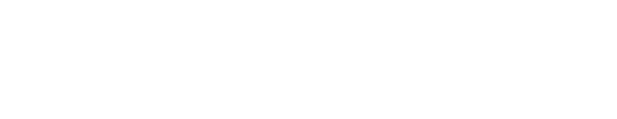
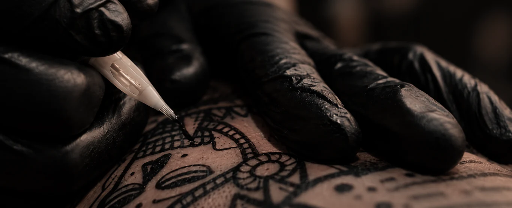

Портфолио Neo Ink
Авторские татуировки и внимание к каждой детали.
Познакомьтесь с мастерами и нашей студией.Татуировки наших мастеров

Пока нет работ в этой категории.
ЕСТЬ ИДЕЯ?
ДАВАЙТЕ ОБСУДИМ.


Авторские татуировки и внимание к каждой детали.
Познакомьтесь с мастерами и нашей студией.Татуировки наших мастеров

Пока нет работ в этой категории.